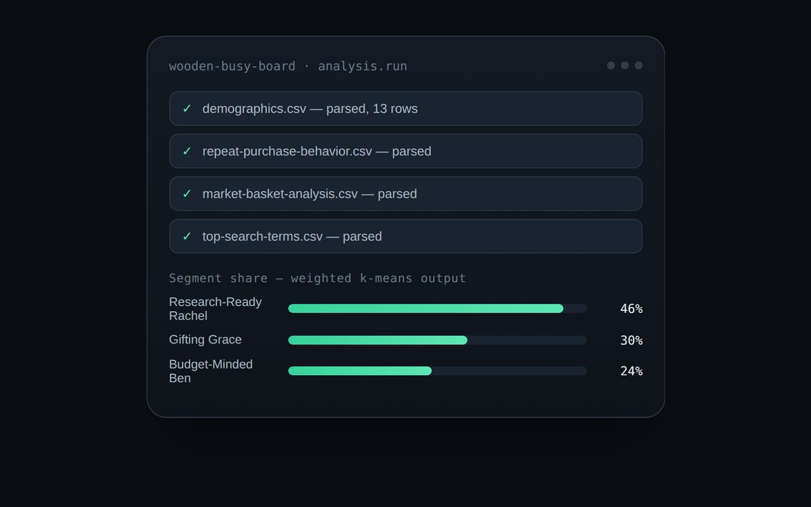

Technology · PartnershipAudienceIQ: AI Persona Builder
An AI tool that turns raw Seller Central data into decision-ready customer personas, piloted across 21 Southeast Asia sellers and scaled to APAC and EMEA.
$8MIncremental revenue
94%Client adoption
45%Less prep time
Full breakdown
Leveraged Amazon Quick Suite to transform complex Seller Central data into customer personas with concrete, actionable recommendations: improved CVR, A/B-tested video creative, and ADSP audience targeting.
- Grounded every persona in real weighted k-means clustering output rather than language-model guesswork.
- Packaged the workflow as a repeatable three-step process the partner team could run per product.
- Piloted across 21 Southeast Asia sellers, then scaled to regional rollout across APAC and EMEA.
- Drove a 34.7% increase in ad sales and a 66.2% reduction in ad spend for one pilot client.
- Won the AI Champion Award, SEA region, nominated by the SEA Country Manager.